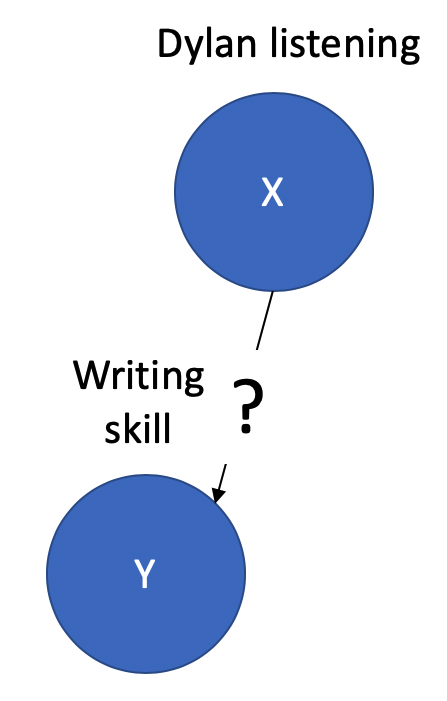
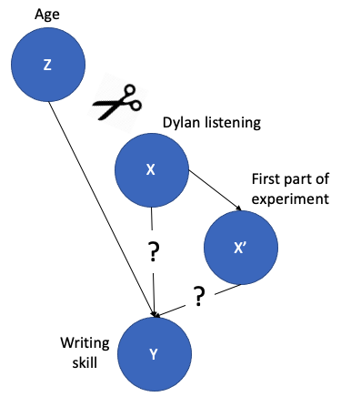

Chapter 1 Experiments
🍎 Learning goals
- Define “experiment”
- Reason about the relationship between the experimental method and causal inference
- Articulate the critical role of randomization in causal inference
- Consider constraints on generalizability for experimental estimates
Welcome to Experimentology. This is a book about how to do psychology experiments! Much of what we cover in the book is about the nitty gritty of how to design your study, how to analyze your data, or even how to name your files! But before we can get into all that, we’re going to need to have a conversation about what an experiment is. And that in turn will lead us pretty quickly to talk about causality, since the unique contribution of experiments is to help us measure causal effects.
The guiding mantra of this book is that experiments are for estimating causal effects, and that good experiments do so in a maximally precise and unbiased way, leading to strong generalizations. Much of our advice about how to navigate decision-making with respect to measurement, design, and sampling comes directly from this mantra.
1.1 What is an experiment, and why would you do one?
When you do an experiment, you change the world in order to learn something new. This common-sense definition has two parts to it: the manipulation and the measure. The manipulation is the thing you are doing to the world, and the measure is the way you quantify the effects that your actions had. The manipulation licenses causal inference, which is our first topic. A second ingredient, randomization, licenses inferences about the locus of the causal effect.
Let’s think through an example. If you’ve ever tried to write a paper or even a tricky email while listening to vocal music with lyrics, you might have had the feeling that the lyrics of the music interfered with your own writing. Let’s call this the “Dylan Hypothesis” – listening to music like Bob Dylan’s lyrically rich songs decreases writing skill in the moment while you’re listening to its.
The Dylan Hypothesis is a causal hypothesis – meaning that we ascribe responsibility for the decrease in writing skill to this factor particularly.2 Defining causality is one of the trickiest and oldest problems in philosophy, and we won’t attempt to solve it here! But from a psychological perspective, we’re fond of D. Lewis (1973)’s “counterfactual” analysis of causality. On this view, the Dylan Hypothesis amounts to the claim that, in some situation, if we hadn’t played Dylan, we wouldn’t have experienced a decrement in writing ability. In what follows, we’ll try to be precise about the causal inferences we’re discussing.
 Figure 1.1: The hypothesized causal relationship of the Dylan Hypothesis.
In Figure 1.1, we show the Dylan Hypothesis using a kind of diagram called a causal graphical model (Pearl, 1998). Our outcome is writing skill (\(Y\)) and our predictor is Dylan listening (\(X\)). The edge between them represents a hypothesized causal relationship. Dylan listening is hypothesized have to a causal effect on writing skill, and not vice versa. Now let’s talk about how experiments allow us to make these causal inferences.
1.2 Causal inference
Most science textbooks don’t start a definition of what an experiment is; psychology textbooks are an exception (Winston & Blais, 1996). Perhaps this is because experiments are a critical method for making strong causal inferences, which are otherwise in short supply in psychology, and so the contrast between experimental and non-experimental research is very salient for psychologists (and economists too). In contrast, the role of causality is much more straightforward in the physical sciences – so straightforward that they don’t talk about it at all.
Causal inference is a central issue in any field that deals with human beings. People are very complex systems. Even from an intuitive perspective, there are many obvious factors – personality, values, culture, physiology, genes – that influence any individual choice. Further, scientists typically have relatively limited opportunities to intervene on complex social systems. Although we can carry out some kinds of experiments within ethical and practical limits, we’re not just allowed to go around doing what we want to the people around us, just to see what happens! This situation stands in stark contrast to the physical sciences: you can do pretty much anything you want with a chemical solution.
Returning to the Dylan Hypothesis, suppose we did an observational study where we measured our variables – Dylan listening and writing quality – in a large population.3 This sounds impractical, but let’s imagine some kind of dystopian, Google Docs+Spotify surveillance in which the companies team up to monitor your writing and listening habits and provide quantitative estimates of writing quality and lyric density. Big data! We might compute a correlation between \(X\) and \(Y\) and find some non-zero relationship between them. If we did this study, you might predict that listening to Dylan would be related to better writing.
 Figure 1.2: Cofounding with age in the Dylan Hypothesis.
Figure 1.2: Cofounding with age in the Dylan Hypothesis.
Can we make a causal inference? No. Correlation doesn’t equal causation here. There is (at least one) confounding third variable: age (\(Z\)). Age is positively related to both Dylan listening and writing skill in our population of interest. Older people tend to be good writers and also tend to be more into folk rockers.4 We won’t even put a question mark on this edge because it seems likely to be true.
The causal relationship of age to our other two variables means that variation in \(Z\) can induce a correlation in \(X\) and \(Y\), even in the absence of a true causal link. When \(Z\) is higher, so are \(X\) and \(Y\) on average, so they are correlated. This gives us a slightly more precise definition of confounding, a concept that everyone learns to use and recognize in discussing experimental design. In our observational experiment, age is confounded with Dylan listening because it has a causal relationship with both the predictor and the outcome.5 There’s a more technical definition that’s more precise here: that is, age provides a “backdoor” from Dylan listening into writing skill. The “backdoor criterion” (it’s really called that!) is a way to define confounding in more complex causal graphs.
Experiments are when we intervene on the world and measure the consequences. Here, this means forcing some people to listen to Dylan. In the language of graphical models, if we control the Dylan listening, variable \(X\) is causally exogenous – not caused by anything else in the system). We “snipped” the causal link between age and Dylan listening, shown by the scissors icon in Figure 1.3.
 Figure 1.3: Experimental intervention snips the causal link between the confounded variable and the outcome.
Figure 1.3: Experimental intervention snips the causal link between the confounded variable and the outcome.
In sum, experiments allow us to make strong causal inferences because they allow us to wield the causal scissors, severing the links that would ordinarily allow “upstream” variables like age to confound our inferences.6 There is a whole wonderful field of causal inference methods for non-experimental and pseudo-experimental designs. Much of this work happens in econometrics and not psychology, and the methods are extremely sophisticated. We recommend Cunningham (2021) as an open access introductory text.
1.3 Randomization
When we talk about experiments in psychology, we are talking about experiments that are designed based on the logic of comparison. In the physical sciences, we can intervene on a system, comparing before and after the intervention. An example of a simple experiment would be to measure the temperature of some water, heat it, and then measure the temperature again. We feel relatively warranted in making the inference that the heat caused the temperature to rise.
This logic feels sound because we believe that our action heating the water is the only thing that’s different between our initial measurement (which we might call a control measurement7 Interestingly, this term is not much more than a hundred years old; it starts appearing in the medical literature in the 1890s and the psychological literature soon after that (Boring, 1954).) and the measurement after our experimental intervention. It feels like we “held everything constant” between the two observations. This is Mill (1869)’s “method of differences”:
If an instance in which the phenomenon under investigation occurs, and an instance in which it does not occur, have every circumstance in common save one, that one occurring only in the former; the circumstance in which alone the two instances differ, is the effect, or the cause, or an indispensable part of the cause, of the phenomenon.”
In other words, comparison allows for causal inferences.
The trouble is that it’s not always as easy to “hold everything constant.” Let’s do two different analogously-designed Dylan Hypothesis experiments. The first will be a within-participants design. We ask someone to produce two writing samples for us to rate; the first is written in silence and the second while listening to Blood on the Tracks. Now we have a problem: our two measurements occur at different times. Being the second observation as opposed to the first might have a causal effect on writing skill – perhaps the participant practiced, perhaps they feel more comfortable in our experimental setup. Perhaps they feel more tired. In other words, we have introduced another confound – this time between parts of the experiment and Dylan listening.
 Figure 1.4: Confounding with order.
Here’s our second experimental design, a between-participants design. We get some individuals to listen to Dylan or not – say we have our parents listen to Dylan and our friends do the experiment in silence – and then measure their writing during the assigned listening (or non-listening) period. Now we have a different issue. The participants in the control and experimental (Dylan) are different from one another. Even though we intervened in the world, we might as well be in the situation of Figure 1.2, in the sense that we have differences between our participants that could make a causal difference (e.g., their age). Again, it doesn’t seem like everything got held constant.
Although structurally these two situations are quite different, they have a single theoretical solution: randomization. Randomization – whether of the order of an intervention in a sequence or the assignment of participants to conditions – is the key intervention that is guaranteed to break causal dependencies. In the case of the order confound, random assignment of condition order guarantees that our estimate of Dylan on writing skill is unbiased8 Unbiased with respect to order, of course! It could be biased by many other things. on average.9 It could be biased in any one situation. Because order has two known states, we can also balance order rather than randomizing it. We’ll talk in some depth in Chapter 9 about how to deal with these sorts of nuisance procedural confounds and when randomization vs. counterbalancing strategies are most appropriate. In the case of the participant confound, random assignment of participants to conditions is the key step that breaks the connection between the myriad confounds related to individual participants’ identities and the manipulation of interest.
Random assignment is so central to the recipe of experimental psychology that sometimes we don’t even think about it as an ingredient! But without it, the cake simply doesn’t rise. One classic example of a violation of random assignment is the sequential recruitment of participants to conditions (e.g., first testing the non-Dylan group and then the Dylan group). This kind of practice can seem unproblematic to a research assistant carrying out a study (we’ve done it!). But it confounds time with group participation and can lead to all sorts of unforeseen issues in causal inference. Imagine that Dylan wins the Nobel prize somewhere during the recruitment process. This event obviously could change the nature of your manipulation. But so could infinite other events – from a global pandemic all the way to the normal course of the seasons changing. Random assignment is the only way to avoid these confounds.
Random assignment is great, but there is a caveat. Random assignment cannot rescue your individual sample from biases. For example, in your randomly-assigned conditions, maybe a few more Dylan condition participants happened to be run after his Nobel than before. Instead, random assignment guarantees that on average your estimate of the causal effect will be unbiased – even if you get lucky or unlucky on this individual instance of your experiment.10 We’ll return to the topic of whether you should test for or adjust for “unhappy randomization” in Chapter 7. A brief answer here, to pique your curiosity: no. That’s pretty good, and maybe it’s the best you can hope for!
1.4 Who are we measuring?
In our running example of the Dylan hypothesis, we have been quite vague about the scope and limitations of generalization. Is this a causal estimate that should apply to all people? Of US college students? Of Boomers that grew up listening to Dylan? Estimating an effect via a sample – the set of people who participate in the experiment – presupposes a population that the sample is drawn from. Psychology researchers often give little thought to this issue, but generalizability across populations is a key challenge for psychology.
To point out the ubiquity of population generalizability issues, Henrich et al. (2010) coined the acronym WEIRD. This catchy name describes the oddness of making generalizations about all of humanity from experiments on a sample that is quite unusual because it is Western, Educated, Industrialized, Rich, and Democratic. Henrich and colleagues argue that seemingly “fundamental” psychological like visual perception, spatial cognition, and social reasoning all differ pervasively across populations – hence, any generalization from an effect estimated with a WEIRD subpopulation is unwarranted.11 We’ll discuss the problem of sample generalizability – and some ways to reason about the WEIRD problem – in more depth in Chapter 10.
A second generalizability challenge is that experimental manipulations are typically realized across specific stimuli. In our Dylan example, this would be using “Like a Rolling Stone” as our only experimental stimulus but then making the claim that our effect generalizes to all Dylan – or even all lyrically-dense music! Yet we too rarely reason about how general our hypothesis across the broader space of stimuli. As we’ll see in Chapters 7 and 9, this issue has consequences for our statistical analysis as well as for our experimental designs (Yarkoni, 2020).
Questions of generalizability are pervasive, but the first step is simply to acknowledge and reason about them. One mechanism for enforcing thinking about theory scope is the idea that all papers should have a section reporting their limitations. We tend to think this is a good idea. Simons et al. (2017) calls this a Constraints on Generality statement.12 In an early working draft, the COG statement was called a Statement of Limits on Generality (SLOG), which we found more memorable. They recommend explicit qualification of generalizability across 1) experimental participants, 2) experimental stimuli, 3) procedures, and 4) historical or temporal features.
🌿 Ethics box: Consequences of poor generalizability
Generalizability questions can seem abstract, but it can have substantial practical consequences when experimental research is applied. To take an example from medical research, it has been common practice for decades to study drug effects in mouse models. What is less well-appreciated is that the typical mouse model has been the male mouse only, with a six-fold difference in use of male relative to female mice. This seemingly practical decision may have widespread consequences (Shansky & Murphy, 2021). Women experience a greater proportion of adverse consequences from pharmaceutical treatments than men, likely because research on development and evaluation of such treatments is conducted on male animals.
When it comes to research with humans, the analogy is clear. We hope that our findings are implemented in practice through the creation of psychologically-based policies, treatments, or educational interventions. But if effects are measured using a population that mismatches the population to which the interventions are applied, then we should expect lowered efficacy and perhaps even unanticipated negative effects. To combat this issue, researchers have an ethical obligation to give careful consideration to the limitations of their samples and to the scope of applicability of their claims.
1.5 Experiments: Chapter summary
In this chapter, we defined an experiment as a combination of a manipulation and a measure. This combination, along with randomization, licenses strong causal inferences about the structure of the world. Experiments are a terrible way to learn about the world. They are costly and time-consuming, and sometimes they fail in uninterpretable ways. Yet they are our best method for estimating causal effects; many other techniques exist but they rely on more complex statistical methods that require certain conditions to be feasible.13 For example, the presence of an external “instrument” – like the weather or the introduction of internet services or changes in state-level policies – that is causally related to your cause of interest but unconnected to your outcome.
Sometimes we just need to know about the existence or magnitude effects for some applied goal, say deciding whether implementing a particular curriculum will lead to changes in mathematics test scores. In this case, a randomized trial of the intervention is all that we need, and the causal effect is the end-point of the study. But often in psychology we want to do more. The “extra” thing we would like to do is to build theories. We’ll turn to this topic in Chapter 2.
Exercise 1.1 Design an experiment for testing the Dylan Hypothesis. (A) What is the condition structure, what is the measure? How do you control for nuisance variables? (B) What are the best arguments against your proposed experimental design? What would an advocate of the Dylan Hypothesis say if it failed to yield a non-zero effect?